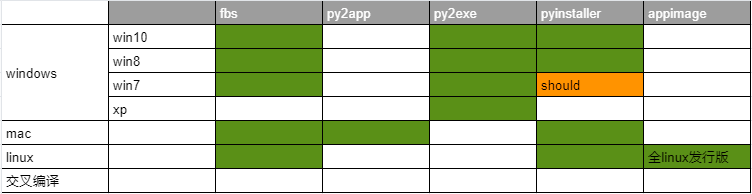
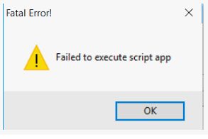

pyinstaller, py2app, py2exe, fbs功能对比

py2exe
软件更新已经不活跃，因此也就略过。
pyinstaller打包pyqt5程序
明确支持win8、win10、理论上支持win7,，支持apple Macos, linux。 pyinsaller可以打包成文件夹形式内含exe入口执行文件的形式，也可以是一个单独的exe文件。
截止目前pyinstaller支持的py最高版本为3.7,在3.8上不稳定。
打包过程
- 打包最好使用virtualenv,不要用全局python解释器，这样会打进来很多无关的依赖。
- 然后在venv里安使用pip装pyinstaller, 很简单 。执行
pip install pyinstaller - 执行打包命令：
pyinstaller -w your-main.py。-w的意思是一个带有GUI的程序，不要出现console那个黑乎乎的命令界面。
FAQ
- failed to execute script ” When App Clicked。。
出现这个问题情况多样，最大可能是比如你的logging.ini,或者依赖的一些数据、配置、图片等资源在打包的时候没有打进去，因为这些非py的资源是需要人为指定的，pyinstaller不会自动copy。
要找到错误在运行打包命令的时候加入--debug imports然后去掉-w参数,这样重新打包，可以看到命令窗口的输入，里面东西很多，往上翻一番总能看到错误，然后根据缺少的文件在spec文件里的datas字段里进行人工指定。spec是什么下面简单记录下。 - spec文件。
主要记录下里面的datas这个字段，其他的暂时没用上。当你执行了打包命令pyinstaller -w --debug import mymain.py的时候，会自动在当前目录生成一个默认的mymain.spec，里面控制了打包的详细细节。
pyinstaller不会自动copy程序依赖的配置文件，数据文件，第三方的exe工具等，这是经常导致打包出来的程序无法运行的主要原因。这些文件在spec文件的datas里进行配置：
a = Analysis(['main.py'],
pathex=['D:\\workspace\\myproj'],
binaries=[],
datas=[('logging.ini','.'),('config.ini','config/')],
hiddenimports=[],
hookspath=[],
runtime_hooks=[],
excludes=['logs/*.*'],
win_no_prefer_redirects=False,
win_private_assemblies=False,
cipher=block_cipher,
noarchive=False)
datas字段是个tuple数组。每个tuple元素第一个是要copy的数据文件位置（相对于工程根目录), 第二个参数是要copy的打包程序的目的地址，例子中的点代表就在被打成的包的最顶层。如果要放入其他目录比如images参考例子中第二项,这样打成的包里就会有个目录config,下面有config.ini。
py2app
py2app主要是完成macos下的python程序打包。
### 主要步骤
- 工程根目录生成setup.py。 执行命令
py2applet --make-setup gui.py。py2applet是安装了py2app后自带的。 - 和pyinstaller一样，数据文件需要自己手工来指定。
python DATA_FILES = ['logging.ini',('appres', ['resource/xx.exe'])]py2app的资源指定写法和pyinstaller有点不一样。他也是一个数组，只不过可以是一个单一文件，也可以是个tuple。单一文件就直接copy到打包的根目录下。如果是个tuple，tuple的第二个元素是一个数组，上例子代表把工程里resource/xx.execopy到打包目标根目录下的appres下面——也就是把xx.exe放到了打成的包的appres/xx.exe。这一点比较坑人。